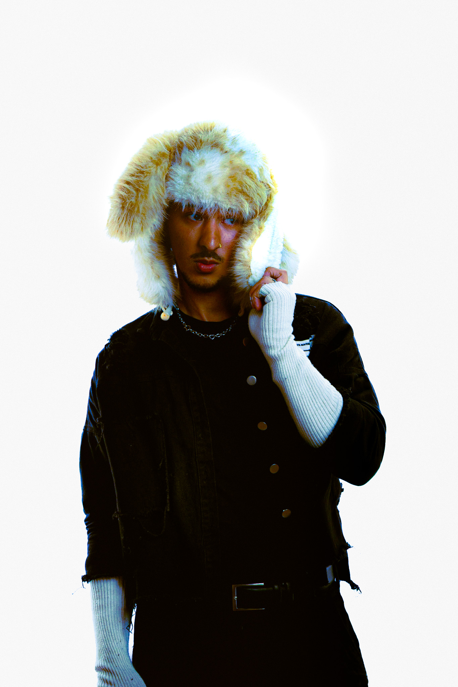

Software Dev / Data Scientist / Web Dev
Full-stack developer and data scientist. I build systems that process information at scale and interfaces that make complexity readable.
4+
Years experience
7
Languages (Python, R, HTML, JavaScript, CSS, SQL, TypeScript)
2
Research Domains
Featured — 2026
01 — Featured
Relational database platform tracking 150+ brands, 1,600+ collections, and 203 aesthetic tags across nine interconnected tables. Features Google Trends integration and style-matching methodology rooted in consumer psychology.
02
Acoustic embedding pipeline for dolphin vocalizations. Adapted from meerkat vocalization research with original RI/ARI metrics, modular flat scripts, and bandpass filtering retuned to 300–3000 Hz.
↗03
CNN-based whistle detection model integrating Raven Pro selection tables and the SEANOE public dataset. Achieves strong early detection results on held-out dolphin vocalization recordings.
↗04
Structural equation model replication of Zhang & Zhang's blind box consumer behavior paper (Frontiers in Psychology), omitting the functional value variable to test model robustness.
↗05
Hand-coded editorial portfolio site for modeling, creative direction, and styling work. Features cinematic background compositing, GSAP parallax, and individual campaign pages.
↗06
This site. Hand-coded editorial portfolio inspired by fashion magazine design systems — Balenciaga campaign typography, Marni spread grid structure, and Mingyu magazine banner treatment.
↗Languages
Frontend
Data / ML
Infrastructure
Based in
San Diego, CA
I work at the intersection of data engineering, machine learning, and frontend design. I'm interested in systems that handle real complexity — not just technically, but in terms of what they reveal to the people using them.
Currently studying cognitive psychology at UC San Diego while building in the data and ML space. I think the most interesting problems sit between disciplines: where behavioral science meets data, where visual design meets systems architecture.
Fashion Market Intelligence Platform
Independent software development
Data Science Research
UC San Diego — cognitive bioacoustics lab
Full-Stack Developer
Freelance
B.S. — Cognitive Psychology
University of California San Diego
Let's work together
Open to full-time roles, contract work, and research collaborations. I typically respond within 24 hours.